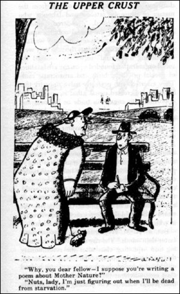
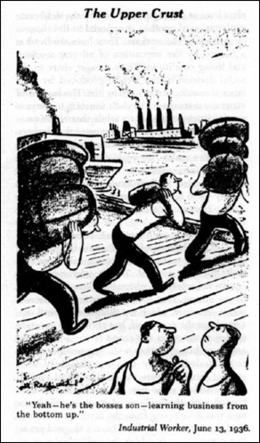

Brev til leserne – Uke 20, 2001:
Klassebevissthet?
Det er frustrerende å ha minst et par gode ideer til artikler og så bare greie å få til begynnelser!
De kommer vel etter hvert, men mine “ettermanustider” er ekstremt uproduktive, det vet jeg av erfaring. Som en slags kompensasjon har jeg sittet og kost meg med å lese Willy Ustads bok nr. 42 i Fire søsken-serien, Ti år for Lea. Lea i dette tilfellet Lea Karlsbru, Willys egen romanfigur fra serien.
Det er ingen roman, det er et overflødighetshorn av fortellinger, innfall og utfall fra Willys liv og meninger i og utenfor serien. Og for meg som kjenner mannen blir det naturligvis noen repriser fra de mange samtalene vi har hatt både på telefonen og ellers, men det muntlige gjorde seg godt skriftlig, for å si det slik.
Tatt i betraktning hvor forskjellige både livene våre og forfatterskapene har vært er berøringspunktene nokså mange, både når det gjelder erfaringer og meninger. Ikke at jeg skal “beskylde” Willy for å være anarkist, men jeg vil gå så langt som å hevde at han nok er langt mer anarkistisk enn han sjøl sikkert tror.
Arbeiderklasse er han definitivt på godt og ondt, han også. Og dermed blir erfaringene mange ganger overraskende like, til tross for de åpenbare ulikhetene mellom livserfaringene.
Willy påpeker forresten gjerne at første gang vi møttes var han i hæren og jeg demonstrerte mot ham…
Han skriver blant annet i boka om dette “arbeiderklasseinstinktet” som gjør slik automatisk opprør mot pengenes og maktas autoritet og krav på respekt. Jeg kan underskrive på realiteten i det.
Willy og jeg har absolutt våre klare uenigheter, noen såpass store at vi vel fremdeles kunne komme til å finnes på hver vår side av en demonstrasjonsplakat. Jeg tror f.eks. ingen ville finne på å kalle ham feminist, sjøl om han aldri så mye har tjent ti år for Lea.
Men boka “Ti år for Lea” anbefales hermed også for de som bare sporadisk har fulgt forfatteren Willy Ustads serie og forfatterskap.
Boka fikk meg virkelig til å tenke over enda en gang dette merkelige begrepet, eller skal vi si fenomenet, klassetilhørighet.

“Klassebevissthet” er et merkelig lite undersøkt begrep. I praksis fungerer den som et slags automatisk hverdagsopprør. Hos de av oss som er vokst opp så å si med revolusjon i baklomma har det også spesielle emosjonelle konsekvenser. Jeg kan fremdeles bli djupt rørt av å høre “Internasjonalen” sunget 1. mai!
Det samme når Gerd og jeg tar vår årvisse tur til gravstedet og hører på talen til arbeiderveteranene i Kristiansund og det kommer folk bort og rekker fram hender og vi gratulerer hverandre med dagen. I slike øyeblikk kan vi glemme ideologiske uenigheter og partiskiller.
At så nettopp gravstedet er blitt et slikt samlingspunkt kan vel tolkes i ymse retninger, jeg velger å se positivt på det, som et sted der vi kan begrave ikke bare gamle kamerater, men også stridsøksen for ei lita stund.
Jeg lurer forresten på hvor mange andre enn meg som har stått og trykket på en knapp på det historiske museet i Barcelona og hørt sangen “A las barricadas” komme ut av høyttaleren over meg og tørket sinte og bevegede tårer mens jeg hører sangen og ser på bildene av de kvinnelige militssoldatene med røde og svarte flagg?
(Forhåpentligvis flere enn jeg tror).
Sinte tårer på grunn av de mulighetene som ble forspilt under den spanske revolusjonen, sinte tårer også for fascisme og stalinisme og forræderi.
Klassebevissthet i en slik nesten rent instinktiv form har faktisk lite med intellektuelle overveielser å gjøre. I møtet med de bedrevitende klassers forståelse eller misforståelse av litteratur spesielt og kultur generelt kan følelsene av og til ta en avstikker langt inn i den revolusjonære voldsromantikken før tankene igjen får noenlunde ro på seg til å fungere normalt.
Jeg tror imidlertid klasseforståelsen også har klare krav og begrensninger. Vi er nå mennesker (dyr!) først, og så kommer alt det andre vi har funnet på av reelle og fiktive skiller deretter. Klasse, kjønn, nasjonalitet, “rase”.
For meg er klassebevissthet også sterkt knyttet til feministiske ideer, og slik jeg oppfatter feminismen har den i motsetning til “maskulinismen” som mål å frigjøre individene, både kvinner og menn, fra sexismens segregasjon av kjønnene.
Jeg husker forresten ennå første gang da jeg som gutt leste om en kommunist som hadde plaget og mishandlet sin kone og sine døtre! Det kunne da rett og slett ikke være sant? Det var nok det.
En av de største blemmene på fagbevegelsen har vært behandlinga av kvinnene på mange “maskulinistiske” arbeidsplasser. Og det var mildt sagt! Jeg har funnet få ting mer avskyelig enn klassesolidaritet som selektivt begrep.
Apropos det. Leste nå en presentasjon av det nyvalgte sentralstyret i NKP i avisa “Friheten” og det gir sannelig dekning for begrepet forgubbing, eller skal vi heller si gubbedominert. Og da snakker jeg ikke nødvendigvis om alder. Det må vel betegnes som noe merkelig at et politisk parti i Norge i dag ikke greier å hoste opp så mye som ett kvinnelig varamedlem til landsstyret?
Kommunistene tror dessuten fremdeles tydeligvis fullt og fast på “partiets ledende rolle” og den nye lederen Zafer Gozet er ifølge seg sjøl særdeles opptatt av å styrke partiapparatet… Ikke noe godt grunnlag for samarbeide med resten av venstresida?
Kom for øvrig over en interessant uttalelse fra Lenin om at én anarkistisk aktivist var bedre enn ti mensjevikiske pratmakere. Det kan jo marxistene legge seg på hjertet. Hvis de da tør å tro på Trotskij som gjengir uttalelsen?
Jeg har lest en del gamle bøker og hefter fra den store “forræderdebatten” i kjølvannet av Moskvaprosessene på trettitallet, og den debatten tjener sannelig ikke de Moskvatro stort til ære. “Anbefalt” lesning: Jacob Friis, Trotskijsmen – en giftplante og Lars Nordbø, Hvem er Trotskij.

Men tilbake til klassebevissthet i motsetning til partitroskap.
Jeg tror at få steder har dette fått et slikt sterkt uttrykk som i de gamle arbeidersangene, som jeg ulikt mange som vokste opp litt seinere enn meg har stor sans for.
Arbeiderlyrikken er også et sterkt uttrykk for det samme, og det er naturligvis noe skamløst religiøst i mye av det, noe som snakker til følelser, ikke nødvendigvis fornuft (hva nå enn det er?).
Men det var ikke bare glødende kamp i dem, det fantes også ett og annet lite sukk. Olga Andersen i et dikt fra 1931 tar opp hvilke kulturelle og sosiale motforestillinger en kvinnelig politisk aktivist hadde å stri med, og kanskje fremdeles har? Litt?:
“Tenk å gå fra en kjøkkenbenk full
av oppvask, og skuring og pussing lik null!”
Mye har forandret seg siden trettitallet, men er de grunnleggende maktforholdene endret? Det er vel fremdeles slik at de herskende tanker er de herskendes tanker?
Heldigvis kan det fremdeles hjelpe litt med opprørske instinkter.
I hverdagsmøtet med mennesker som tror at de på grunn av posisjon eller penger har en eller annen form for sosial “forkjørsrett” blir det en fryd å jekke dem ned noen hakk og dermed indirekte fortelle dem som i “Clovers” sang fra femtiåra at “Your Cash Ain’t Nothing but Trash”.
Folk som ikke har andre verdier å vise til enn penger, posisjon og tjuveri av vårt felles arbeid burde man kanskje synes synd på, men ikke mer enn at jeg personlig synes den nå så utskjelte kulturrevolusjonen i Kina var på rett vei da den plasserte direktørene på golvet i fabrikken for å lære dem ei lekse om arbeid.
Aksjenes pengedemokrati som styrer økonomien har forresten fjernet eierskap så ettertrykkelig fra det å virkelig “eie” ei bedrift at den tradisjonelle kapitalisten som startet ei bedrift og gjorde den til sitt livsverk er borte. I stedet har vi fått en flokk totalt opportunistiske åtseletere som lever som en pariakaste på toppen av samfunnskaka og knapt nok lenger vet hvilke bedrifter de har større eller mindre “eierskap” i.
Samfunnet de styrer har de forvandlet til et gigantisk monopolspill der staten nå kun kontrollerer noen få felter og sjansekort, som “gå direkte i fengsel”.
Hilsen og håndslag,